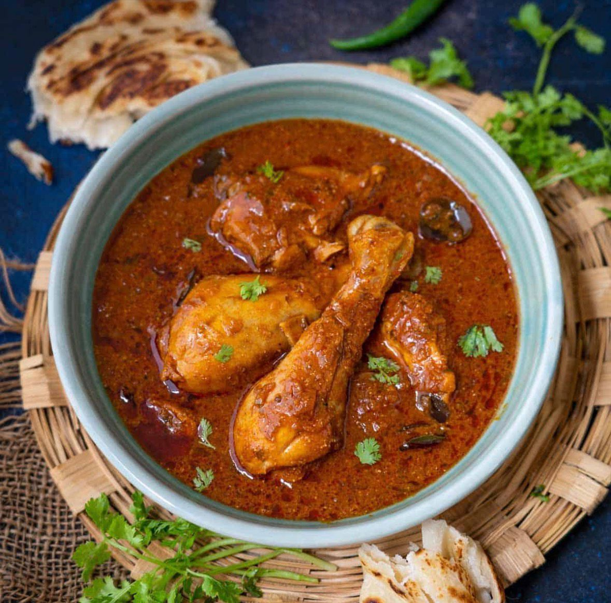
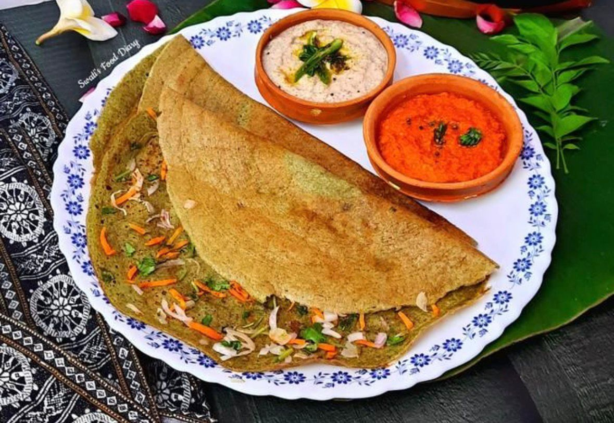
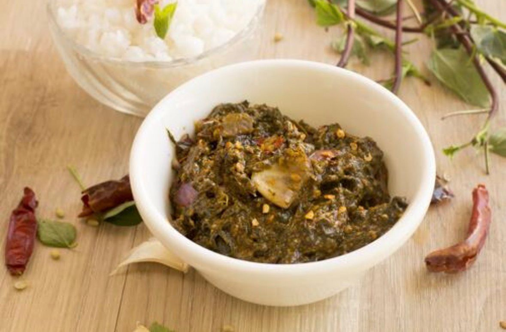
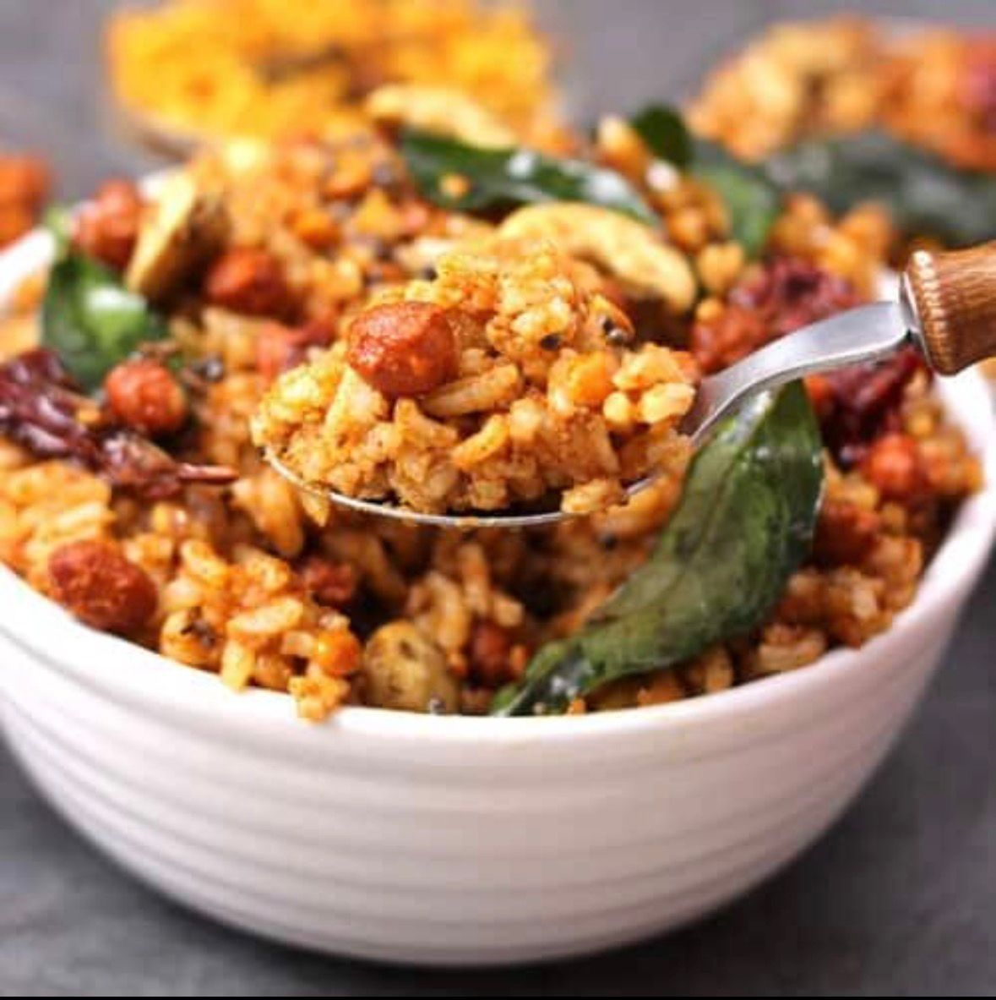
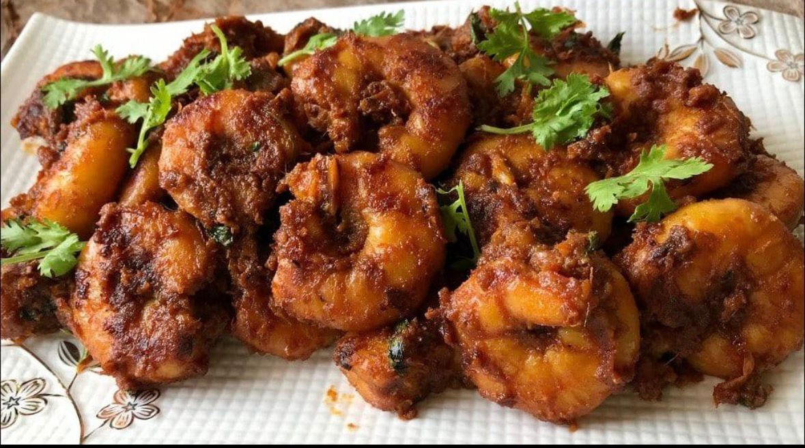

Andhra Chicken Curry
Ingredients: Chicken, onions, tomatoes, spices, curry leaves
Description: A spicy and flavorful chicken curry, popular in Andhra cuisine.

Pesarattu
Ingredients: Green gram, ginger, green chilies, onions
Description: A protein-rich dosa made from green gram, served with chutney.

Gongura Pachadi
Ingredients: Gongura leaves, red chilies, garlic, spices
Description: A tangy chutney made from sorrel leaves, unique to Andhra.

Pulihora
Ingredients: Horse gram, tamarind, spices
Description: A rich and hearty soup made from horse gram, served with rice.

Royyala Lguru
Ingredients: Prawns, spices, onion
Description: Spicy prawn curry.